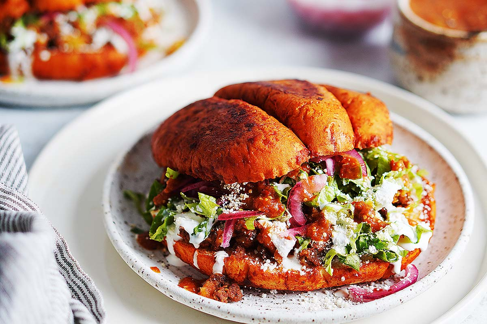

Pambazos

Here are the step by step instructions on how to make Pambazos
Ingredients
For the Salsa:
- 5 to 6 large guajillo peppers – remove the seeds prior to cooking.
If you can’t find guajillo peppers, you can use Chile Negro, California or New Mexico.
- ¼ large onion – white or yellow will work fine.
- 1 large garlic clove peeled
- ½ teaspoon salt – I like to use kosher salt since it has a better flavor profile.
- ½ teaspoon black pepper – freshly grinded is the best!
For the Pambazo:
- 3 yellow potatoes or 2 large russet potatoes peeled and cut into small cubes.
Cutting the potatoes first will speed up the cooking process.
- 9 ounces (250 g) beef or soy chorizo.
- 4 telera breads cut in half. See below for substitutions.
- 2 tablespoons vegetable oil
The Toppings
- 2 cups shredded lettuce like romaine or iceberg
- 1 cup crumbled cotija or queso fresco
- ½ cup Mexican crema
- Mexican pickled onions
- salsa chile de arbol or salsa verde (Optional)
Instructions:
Cook the salsa
- n a small to medium pot, add the ¼ of a large onion,
1 garlic clove and a ½ teaspoon of salt & pepper.
Add enough water to cover the onions.
- Bring to a boil then lower heat to medium. Cook for 5 minutes.
- Add the guajillo chiles making sure they’re completely under the water.
Turn off heat and let them sit for 10 minutes or until the chiles are soft and pliable.
- In a blender or food processor, add the chile guajillos, onion, garlic plus 1 ½ cup of the chili water.
Blend until smooth and transfer to a bowl.
Make the Chorizo and Potatoes
- While the chiles are getting hydrated,
cook the cubed potatoes in a small pot with enough water to cover the potatoes.
Cook for 15 minutes on medium-high heat or until soft. Drain and set aside.
- In a large skillet, add the chorizo and cook over medium high heat for 10 minutes.
- Add the potatoes to the cooked chorizo
and mix well or smash them a little bit in the chorizo a little bit to form a more solid consistency.
This will help the chorizo/potato mixture stay inside the sandwich better.
Make the Pambazos
- On a large skillet or comal, add the 2 tablespoons of oil. Heat over medium heat.
- Brush the telera with the salsa or dip it into the salsa to cover the outside of the bread.
- Fry the bread on the skillet or comal until lightly crispy on the outside. Repeat the process for all of the bread.
- Open the telera bread and fill with the chorizo and potato mixture, lettuce, crema, crumbled queso, pickled onion and salsa if using any.
Enjoy! Make sure you get some napkins becaue Pambazos can be messy!